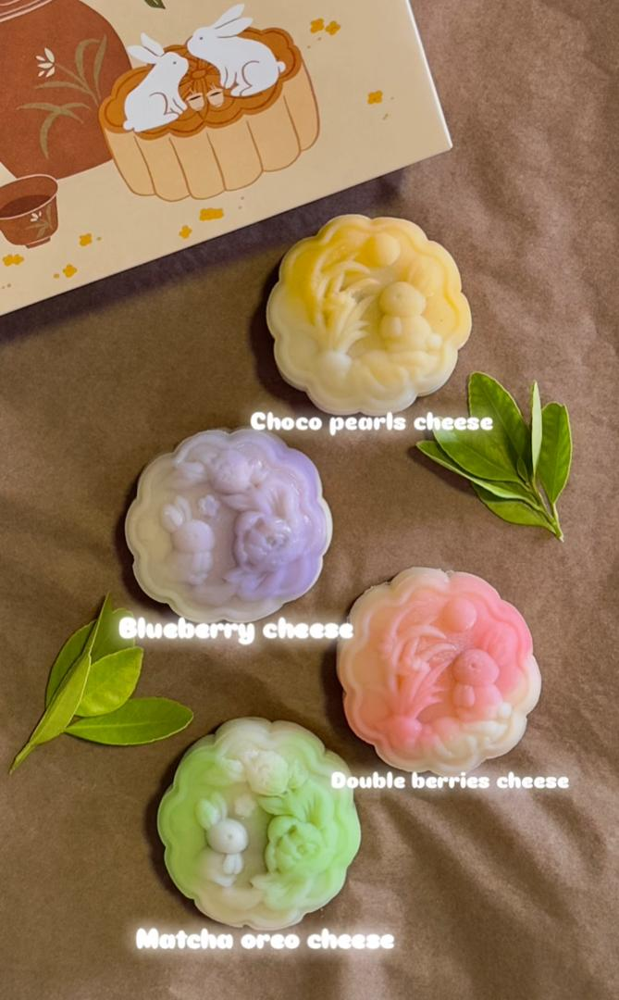

欣悦月饼

每一颗月饼都是手工制作，坚持传统工艺的同时又不输现代感！精挑细选的食材让你无论是经典口味还是创意风味，咬下去都是满满的团圆滋味！
- 我们使用中高档食材，少糖少油，口感细腻，不仅保留了月饼的香醇，更适合现代人追求健康的饮食需求。
- 我们提供四种口味：
- 1. Choco Pearl Cheese: 浓滑芝士搭配醇厚黑可可，点缀脆口巧克力珍珠，层次丰富，苦甜平衡。
- 2. Blueberry Cheese: 手熬蓝莓果酱与轻乳芝士交织，酸甜清爽，果香突出
- 3. Double Berries Cheese: 蓝莓 × 草莓双果搭配，莓香更立体，入口先甜后微酸，不腻口
- 4. Matcha Oreo Cheese: 严选抹茶融入轻乳芝士，搭配 Oreo 可可饼底，回甘明显、苦甜协调
- 欲知更多资讯，请联系我们吧！
立即联系我